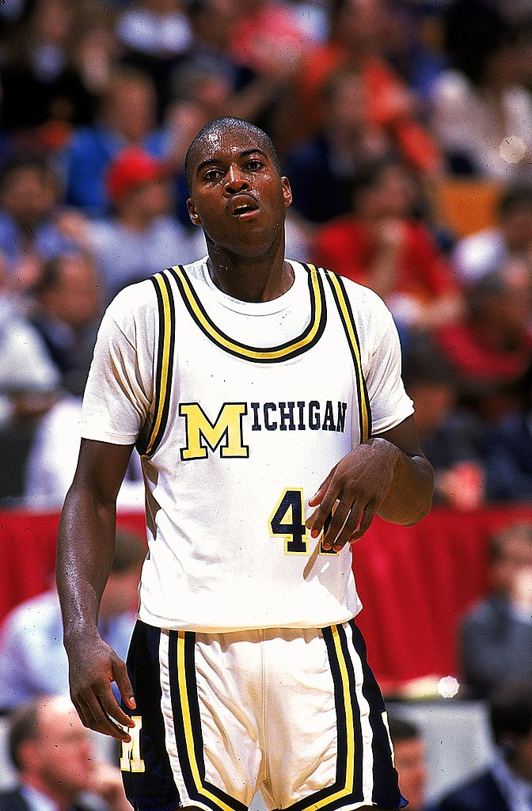

Glen Rice
Glen Rice set the record for the most points scored in the tournament at 184 total points back in 1989. He averaged 30.7 ppg and led Michigan to a national championship defeating seaton hall.

Austin Carr
Austin Carr currently holds the record for the most ppg (points per game) in a single tournament at 52.7. He also holds the record for most points scored in a tournament game at 61 in their first round game against Ohio. However even with his success, Notre Dame only played three games this year making it to the second round of the tournament. Even though Carr scored 52 points, they ended up losing in the Mideast Regional Semifinal to Kentucky. After losing to Kentucky they played in the Mideast Regional third place game where they lost to Iowa with Carr scoring 45 points. This was in 1970 which was before college sports was broken up into the three divisions that we know today in 1973.